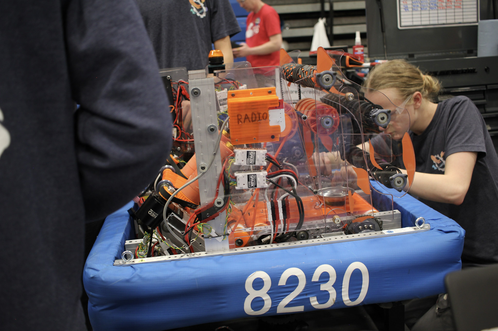
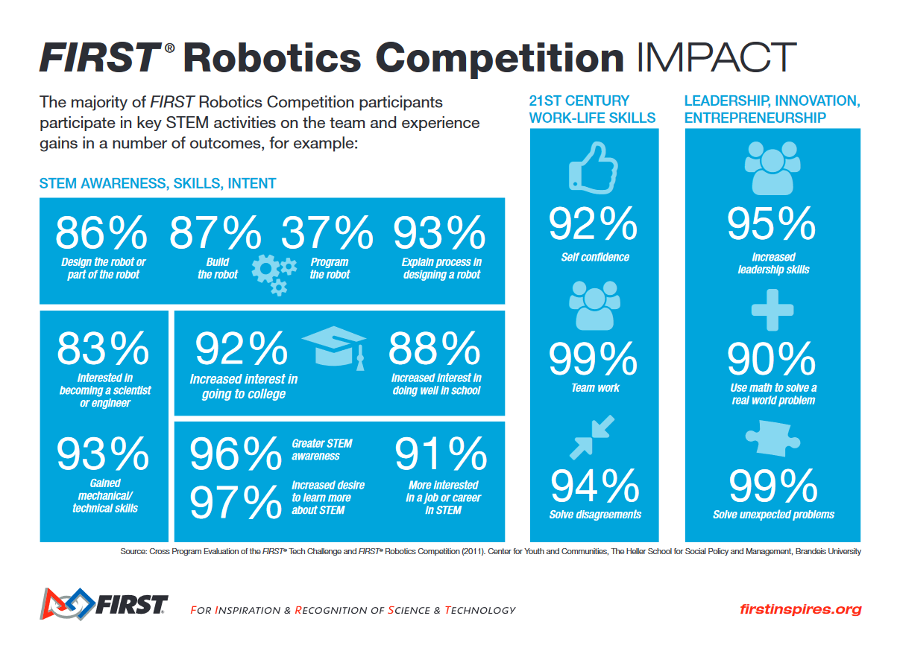

The FIRST Exhibit

For Inspiration and Recognition of Science and Technology, or FIRST, is the leading youth STEM education nonprofit in the world. FIRST offers kids the opportunity to create robots of their own in a competition format.
FIRST has three different programs:
- FIRST LEGO League
- FIRST Tech Challenge
- FIRST Robotics Competition
FIRST LEGO League
FIRST LEGO League, or FLL, it FIRST's program for younger kids, operating from ages 4-16. FLL is divided further into three parts: FLL discover, FLL explore, and FLL challenge.
FLL Discover
FLL discover is the section for grades PreK-1. Teachers & parents are given a set of hands-on activities for students to explore and create.
FLL Explore
FLL explore is the section for grades 2-4. In FLL explore, students are tasked with designing, constructing, and programming simpler robots. This teaches students the basics, which they can then apply in FLL challenge
FLL Challenge
FLL challenge is the section for grades 4-8. Student teams are challenged to complete as many tasks with a robot of their creation in a set amount of time. Under adult guidance, teams must design, build, and program a complicated LEGO robot. They then take their robot to a competition, where they compete against other teams.
Something to note about FIRST is that one of their guiding principles is the idea of "coopretition". Teams are competing against one another, yes, but teams are also highly encouraged to help other teams, make friends, and enjoy the experience.
FIRST Tech Challenge
FIRST Tech Challenge, or FTC, is a big step up from FLL. Made for grades 7-12, teams are given a game in September, and have to design, build, wire, program, and test their robot from scratch by as early as late October.
Building & Competing with their Robot
This requires teams to work out innovative solutions of their own, collaborate with each other, manage deadlines, and think like engineers. All of which are highly applicable skills in the workplace.
When teams go off to compete, it works a little differently than FLL. Teams are randomly paired, and compete in alliances for the game. They gain points by scoring pieces, or other miscellaneous actions. The best teams advance to playoffs, then states, then world-level competition.
Money Management & Fundraising
Not only do teams have to build the robot on their own, they also have to source the parts to build the robot. This requires researching what they need, where to get it, how much it will cost.
Speaking of cost, FTC starts to get into the area where teams have to find ways to fund themselves. Building a robot is expensive, after all. This can be anything from getting sponsored by a local businesses or school, to kids going out and fundraising themselves.
FIRST Robotics Competition
FIRST Robotics Competition, or FRC, is another step up. For grades 9-12 only, FRC, similarly to FTC, provides students with a game at the start of the season, or "kickoff". FRC though, provides students from January to March to complete their robot. While this may seem unfair, FRC demands a much larger, more complex robot than FTC.
Building the Robot
FRC teams have to do all the things that FTC demands, but scaled up to 11. Robots in FRC can reach heights of 6 feet, and weigh over 100 pounds. Everything about the robot is more complicated in FRC.
Competing
The competition design is a bit complicated in FRC. Teams get randomly assigned alliances of 3 for 10 matches each. They earn what is called ranking points by both winning, and completing various side tasks. Ranking points determine alliance capitans, who then pick teams for playoffs. This is all for one competition. Teams are guaranteed 2 district comps, and if they qualify, district championships, and worlds.
Money Management
If you thought FTC was expensive, think again. Registration alone for FRC is $6,000. Robots can cost up to $10,000. Then there's travel, food, registration for districts & worlds if you get there, etc. Essentially, teams need a lot of money. Many teams manage to get sponsorships from various companies, mainly big tech companies like Boeing or NASA. Others don't get enough from that alone, and have to find other income.
Outreach
FRC teams are encouraged, and rewarded, for making an impact on their community. Especially with little kids, teams spread STEM ideas and education throughout their community, going to events, hosing events, having summer camps, and starting FLL or FTC teams.
Our Arlington Tech FRC Team
Here at Arlington Tech, we have our very own FRC team, the Koibots. The team makes up around 10% of the student population.
Last year, the Koibots made Cuttlefish (shown above), a small but fierce shooter robot that took thm to district championships.
Impact of FIRST
FIRST has had a huge impact of thousands of lives, including my own. It is truly a wonderful program that should be offered in more places. Below is an infographic of the impact that they have.
